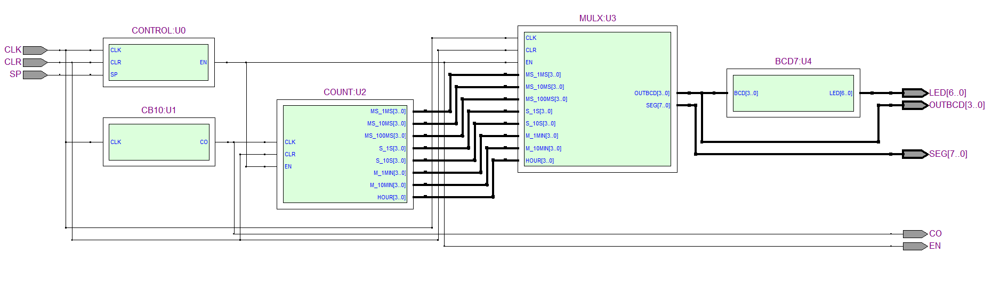
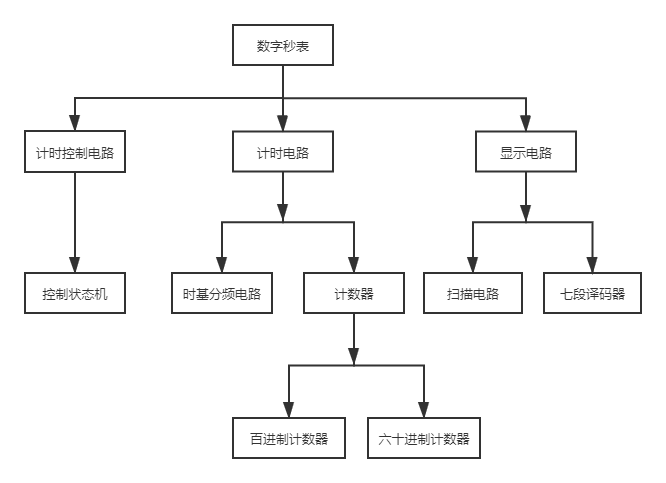
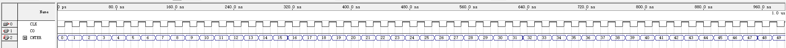
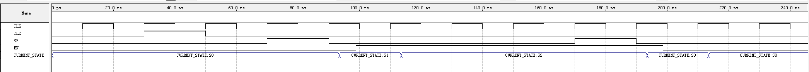
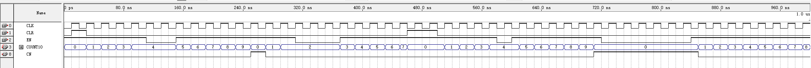
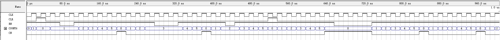
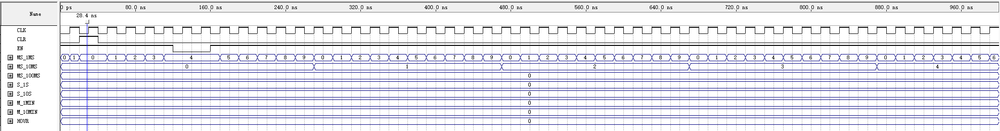
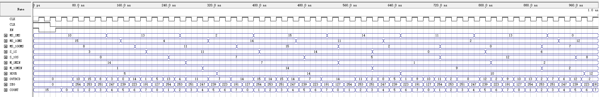
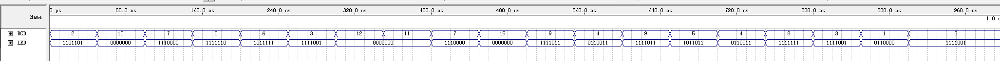
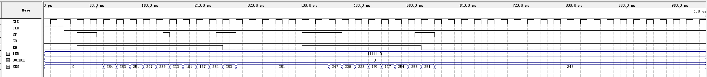

当今社会正朝着电子市场发展，越来越多的电子产品应用于各个领域。数字秒表是日常生活中比较常见的电子产品，常用于体育比赛和时间计时，计时的精准性和稳定性是衡量数字秒表最重要的两个指标。现在市场上的数字秒表基本上都能满足计时准确的要求，但很少能满足计时稳定性的要求。本文设计了一种用于精确计时且计时稳定性高的数字秒表，该设计是在Quartus Ⅱ环境下，基于 VHDL语言来编写的，具有开关、计时和显示功能，其计时精度可达0.01s，计时范围较大，计时稳定性好。该设计具有很强的实用性，有着非常广泛的应用。
实验选题及目标
实验选题
在科技高度发展的今天，集成电路和计算机应用得到了高速发展。尤其是计算机应用的发展，它在人们日常生活中已逐渐崭露头角，大多数电子产品多是有计算机电路组成，如：手机、mp3等。而且将来的不久他们的身影将会频繁的出现在我们身边，各种家用电器多会实现微电脑技术，电脑各部分在工作时多是一时间为基准的。
本文就是基于计算机电路的时钟脉冲信号、状态控制等原理设计出的数字秒表。秒表在很多领域充当一个重要角色，在各种比赛中对秒表的精确度要求很高，尤其是一些科学实验，他们对时间精确度达到了几纳秒级别。数字秒表具有操作方便、使用简单、计数精准等使用优点，在日常生活中的到了广泛认可和使用。
实验目标
设计一块数字秒表，能够精确反映计时时间，并完成复位、计时功能。秒表的计时范围为0秒~ 59分59.99秒，精度为0.01秒，并可显示计时时间的分、秒、毫秒等度量。
（1）具有秒表系统功能要求显示功能, 用8个数码管分别显示时、分、秒、毫秒，计时范围为00: 00： 00~ 59: 59：99。
（2）数字秒表计时精度是0.01s。
（3）具有启/ 停开关, 复位开关，复位开关在任何情况下都能使用，使计实清零。
实验内容
根据系统设计要求, 系统的底层设计主要由控制模块、分频模块、计时模块、显示模块四部分组成。系统顶层设计图如图所示：
图中左边为三个输入信号CLK、CLR、SP分别为时钟信号、复位开关和启/ 停开关。主要模块有：分频模块（CB10），时间计数器(COUNT),复位控制(CONTROL)，数据选择模块(MULX),译码器(BCD7)。右边为五个输出信号LED、OUTBCD、SEG、CO、EN分别为七段式LED码值、输出时间值、数码管位选、分频信号和使能信号。
由模10计数器模块与模6计数器模块进行计数；实验室仪器可产生标准的50mHz的时钟信号，通过分频器模块产生所需的1kHz的时钟信号；复位模块可进行计数器复位操作；译码器是为了将四位二进制信号转换为LED所需的七位二进制编码；状态变换模块是为了用户按键后信号的变换及保持。

实验开发环境与器材
Quartus Ⅱ 9.1和FPGA器件EP2C35F484C8
实验代码
CB10.vhd
1 | LIBRARY IEEE; |
CONTROL.vhd
1 | LIBRARY IEEE; |
CDU10.vhd
1 | LIBRARY IEEE; |
CDU6.vhd
1 | LIBRARY IEEE; |
COUNT.vhd
1 | LIBRARY IEEE; |
MUXL.vhd
1 | LIBRARY IEEE; |
BCD7.vhd
1 | LIBRARY IEEE; |
Stopwatch.vhd
1 | LIBRARY IEEE; |
实验流程与步骤
根据系统设计要求, 系统的构成主要由时基分频模块、控制模块、计时模块、显示模块四部分组成，采用自顶向下的方式设计这些模块，系统构成框图如图所示。
(1) 时基分频模块
该分频模块就是把系统工作频率分频后当做定时器的工作频率，例如系统时钟为50MHz，50000分频后定时器的工作时钟为1kHz。
(2) 控制模块
该功能模块是通过对模块的VHDL 程序编译来生成模块的功能元器件，其中
VHDL程序采用状态机描述的方式，状态都采用符号化状态。模块的元器件有三个输入端和一个输出端，其中输入端信号为时钟信号CLK、控制信号SP和复位信号CLR。输入信号SP用于控制计数模块的计时状态，在VHDL程序中设置计时模块有四种状态，分别为s0、s1、s2 和 s3，其中 状态s0是保持态，s1是启动态，s2是计数态，s3是停止态。 输出端为使能信号EN，它是高电平有效。整个程序可分为两个进程来分别描述状态转化机和寄存器操作。在VHDL程序中设置输入信号SP变化时计时模块所对应的状态。通过该设置使得系统可通过控制输入信号SP的值来决定计时模块所处的状态。
（3）计时模块
计时模块共需要2个六进制计数器和6个十进制计数器。其中六进制计数器和十进制计数器的描述方法几乎完全一样。考虑到级联的需要，两个计时器除了时钟输入CLK和异步清零CLR之外，另外设计了计数使能输入端EN，该使能端用于控制计时模块是否工作。
（4）显示模块
数据选择的作用是为了选择计时模块每个位置的数字，并将其对应的数字输出，并设置一个位置标志位来显示输出数字为计时数据的哪一位。显示模块用于显示数据选择器输出端BCD的数据，该显示模块采用的是七段译码器的编译码规则，将ASCII 数据转化为对应的七段译码器数据。计时显示电路的实现方案采用扫描显示，即每次只驱动一位数码管，各位数据轮流驱动对应的数码管进行显示。

实验结果与分析
数字秒表系统各个模块及整体仿真图如下：
（1）时基分频模块仿真

CLK是时钟脉冲输入端，CO为分频后信号输出端。由FPGA器件内部50mHZ的时钟脉冲产生秒表需要的1kHZ时钟频率，需要对50mHZ进行50000分频。
（2）控制模块仿真
控制模块采用高效的状态机控制，模块有四种状态，分别为s0、s1、s2 和 s3，其中 状态s0是保持态，s1是启动态，s2是计数态，s3是停止态。异步清零，秒表在任何时候都能执行清零操作，SP来控制秒表的开始或关闭。

（3）计时模块仿真
①十进制计数器仿真

图中可以看出十进制计数器的计数功能正常，从0计到9后回0，清零时立即从0开始计时。
②六进制计数器仿真

图中可以看出六进制计数器的计数功能正常，从0计到5后回0，清零时立即从0开始计时。
③计时器仿真

计时器功能正常，能够准确计时ms、10ms、100ms、1s、10s、1min、10min、hour位。
（4）显示模块仿真
①数据选择器仿真
数据选择模块选择计时模块每个位置的数字，并将其对应的数字输出，并设置一个位置标志位来显示输出数字为计时数据的哪一位。

②BCD七段译码器仿真

（5）秒表系统仿真

秒表系统仿真正常，从ms位到hour位依次刷新扫描，百进制和六十进制正常，异步清零复位正常，系统整体运行良好。由仿真结果可以看出系统具有计时和显示功能，且满足计时精度为10ms，计时范围为0 ～ 59 分 59.99 秒的设计要求，同时计时稳定性高。
实验体会
VHDL作为一种标准硬件描述语言，它除了含有许多具有硬件特征的语句外，其语言形式和描述风格与句法类似一般的计算机高级语言。VHDL有着与其它语言截然不同的地方，那就是它的互动性很强。因为语言的复杂，老师想要教会我们去用这门语言，光是看书或者PPT是不够的，那样在脑海中的印象并不深刻，所以老师让我们尽量带自己的电脑去上课，在课堂上可以跟着老师一起做。
通过这次课程设计，我了解到了一些自身的不足：对于模块功能想象力不足，模块设计也总是错误百出，粗心大意是永远会出现的。一开始，感觉数字秒表的功能模块应该很清晰，模块之间的联系很密切，同时，觉得自己对于这种简易电子设备的内部结构应该很熟悉。可是，到了真正操作的时候才发现自己想得太简单了。虽然数字秒表就是些简单的计数器的综合，但是每个计数器的设计也是需要懂很多知识的。而且秒表有复位功能，要考虑到复位时同步清零，清零后还要保持在零的状态，清零是用户进行的操纵，需要有外部输入，又要想暂停、启动的控制，这样就需要状态机的模块进行使能端、清零端的状态转换。这些虽然只是细枝末节，但是真正的编程的成功因素很大一部分都是取决于这些细节。
附录(VERILOG)
1 | CB10.v |